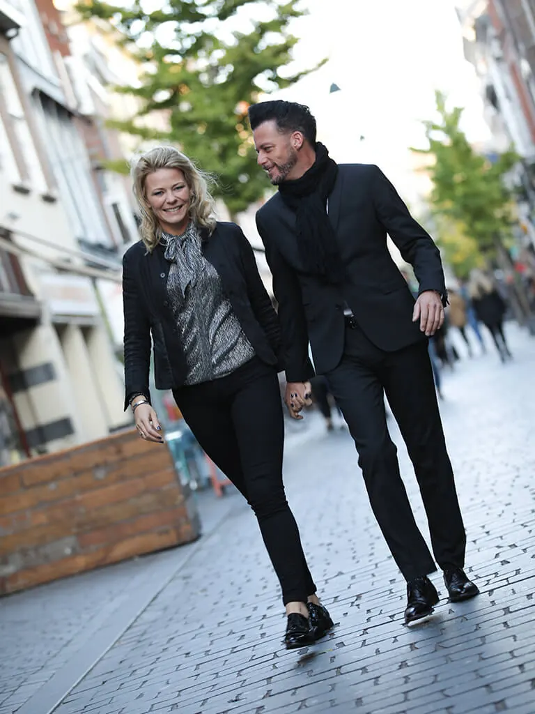

Kapper
Kapsalon Williams & Grey

Ontdek de Unieke Haarbeleving bij Kapsalon Williams & Grey in Nijmegen Oost
Welkom bij Kapsalon Williams & Grey, dé bestemming in Nijmegen Oost voor een uitmuntende haarverzorgingservaring. Gelegen aan de Van het Santstraat 1, is onze salon een toevluchtsoord voor zowel dames, heren als kinderen die op zoek zijn naar een kapsel dat perfect aansluit bij hun persoonlijke stijl.
Professionele Diensten voor Elke Haarwens
Ons deskundige team is toegewijd aan het luisteren naar uw behoeften en het toepassen van onze uitgebreide kennis om het ideale kapsel te creëren dat bij u past. We zijn gespecialiseerd in:
- Knippen: nauwkeurig en aangepast aan uw stijl.
- Scheren: voor een strakke en verzorgde look.
- Kleuren: levendige kleuren die uw persoonlijkheid weerspiegelen.
- Stylen: van klassiek tot trendy, voor elke gelegenheid.
Kwaliteitsproducten voor Uitzonderlijke Haarverzorging
Bij Williams & Grey geloven we in het gebruik van alleen de beste producten. We zijn trots op het aanbieden van L'ANZA, een leider in haarhersteltechnologie. Elk product is ontworpen om uw haar te herstellen, te verzegelen en te beschermen, zelfs tijdens het kleuren, terwijl het tevens de gezondheid van onze planeet ondersteunt. Voor onze heren bieden wij de exclusieve "1821 MAN MADE" lijn, een unieke combinatie van nostalgie en moderne verzorging met zeldzame en waardevolle ingrediënten.
Een Uitnodigende Sfeer voor een Ontspannen Bezoek
Onze salon verwelkomt u in een warme en sfeervolle omgeving, waar u zich direct thuis zult voelen. Of u nu komt voor een snelle knipbeurt of een volledige haartransformatie, wij zorgen ervoor dat uw bezoek aan Kapsalon Williams & Grey een onvergetelijke ervaring wordt.
**Boek Vandaag Uw Afspraak bij Kapsalon Williams & Grey**
Bezoek ons in Nijmegen Oost en laat ons team van haarstylisten u helpen om uw ideale look te bereiken. Voor het maken van een afspraak of voor meer informatie, neem gerust contact met ons op. Wij kijken ernaar uit om u te mogen verwelkomen in onze salon!
Contact en openingstijden
- AdresVan 't Santstraat 1, 6523 BA Nijmegen Kaart
- Openingstijden
maandag gesloten dinsdag 09:30–16:00 woensdag 09:30–17:00 donderdag 09:30–17:00 vrijdag 09:30–17:00 zaterdag gesloten zondag gesloten - Goed om te wetenknippenkleurenbarberherenkinderenonline boeken
- Contactwilliamsandgrey.nl
0246793807
info@williamsandgrey.nl - ReviewsBekijk de reviews op Google Maps
Nieuws en agenda
Er staat nog geen nieuws of evenement van Kapsalon Williams & Grey op NijmegenOnline.
Is dit jouw bedrijf? Stuur gratis nieuws in of zet je evenement in de agenda, dan staat het hier.
Hier vind je Kapsalon Williams & Grey
Kaart: © OpenStreetMap-bijdragers